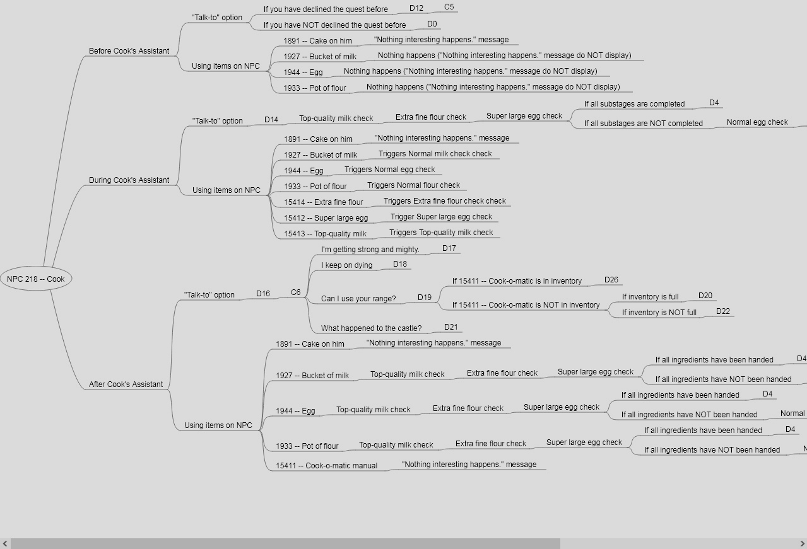
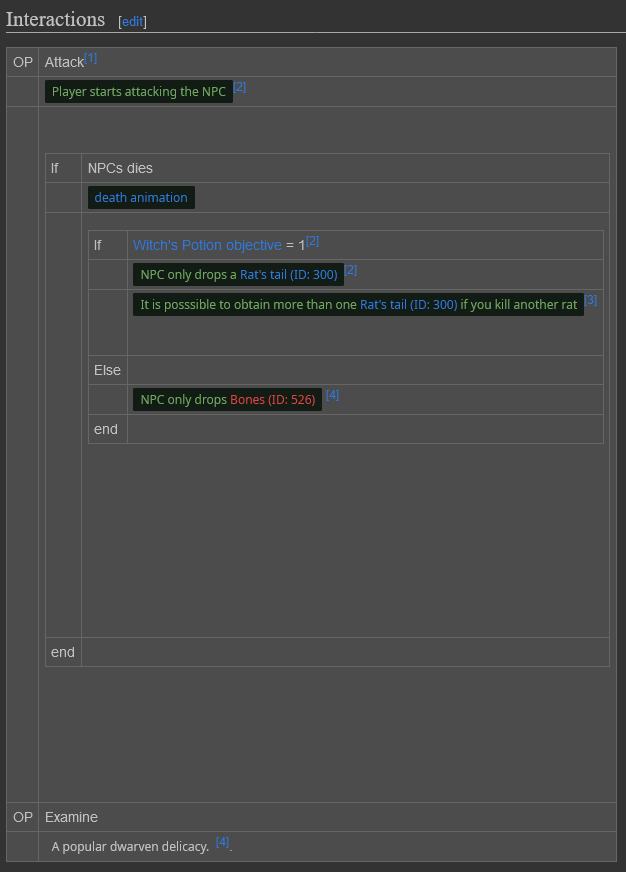

RuneLibris Devlog #1
Despite me writing a rant about RuneScape preservation last week, something compelled me to try again, so here I am. I think that writing that rant offered me some kind of clarity because I am not bothered by the prospect of preserving the game anymore. I just want to do it. Perhaps I simply want to prove to myself I am capable of doing so.
The first thing I did was rework RuneLibris. That thing was a mess. Since I did not want to delete anything, I simply moved everything to the userspace. I also decided to limit the scope of my archival efforts to non-repeatable content that existed for a significant amount of time in-game. My efforts will mostly be targeted at archiving quest interactions.
In my previous attempt at RuneScape preservation, I mapped dialogue using mindmaps made with FreeMind. The result looked like this:

Right click on the image to open it in full resolution.
This greatly displeased me. It also had a major downside. The mindmaps were totally isolated from the MediaWiki installation. For example, I couldn't use a template to flag some data as being missing.
As such, I decided to redo my approach. I ended up making wikitables that represent an abstraction of RuneScape code. The result was this:

That is much better. That idea is based on how RPG Maker interfaces have a visual representation of code when making events.
My current method of preserving RuneScape consist of making a cluster of small videos and images compressed in webm and webp that display a specific interaction in game. For example, if an NPC does an animation during a quest, a small video of said animation is recorded and added to the wiki.
One of the first things I started to do was archive Tutorial Island. This is where the problem started. I first did a “standard path” run on a new account. This took 16 minutes (16:14) Parsing the video until the 03:15 mark took me 7 hours (07:16). To be completely honest, this significantly lowered my morale.
I then wondered if Tutorial Island could be a special case due to its introductory nature (hence why it would have lots of time-consuming interactions). After looking at quest varbits, I determined that the simplest quest in RuneScape 3 was Witch's Potion. So I decided to go preserve this mini-quest as to gather intel on the preservation process.
I started by parsing AlaskaRS' playthrough. The video is 3 minutes long (02:53). Parsing it took me 1,5 hour (01:26). As such I can determine that parsing 1 minute of content roughly takes an hour.
The long parsing time is definitively a problem. It is notably a stark difference between just playing the game. It would be nice if I could just put references to existing videos on wiki pages, but then the archive would quickly become unshareable as video files tend to be huge.
I also have some minor concerns about the total file size of RuneLibris. As the writing of this, I got everything for the current iteration for Witch's Potion. Files related to this quest weight 4,17 mb. In the previous iteration of RuneLibris, it was noted that the files for Cook's Assistant weighted 17,7 Mb. Although those sizes are relatively small, they will add up. I expect that in the end, the archive will weight around 10 GB. Although not ideal, this does seem a fair price to pay to have RuneScape 3 preserved.
In an ideal world, we would have the ability to record and play back packets similar to RSC+. This is not doable for a variety of technical reasons. The next theoretical best thing would be packet dumps. Putting aside the obvious hurdle of needing to maintain a third-party client, this would have the problem of not being easily readable by humans. As such, I will stick to my current method for now.
Despite me having a clear overview of the colossal challenges of RuneScape preservation, I am somehow not bothered by this. In fact, I am in a very strange mood. I feel like I traveled back in time to 2022. I guess it would be more appropriate to say that it feels like that the world remained in stasis. So far the only major difference is the existence of the Jagex Launcher. I feel like in a dream. Curious.
Anyway, it seems like that RuneScape preservation is back to the menu for me. We will see if it ends up like last time or not.
Written by manpaint on 28 March 2025.